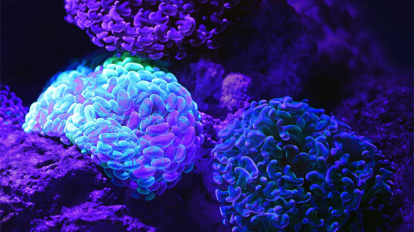
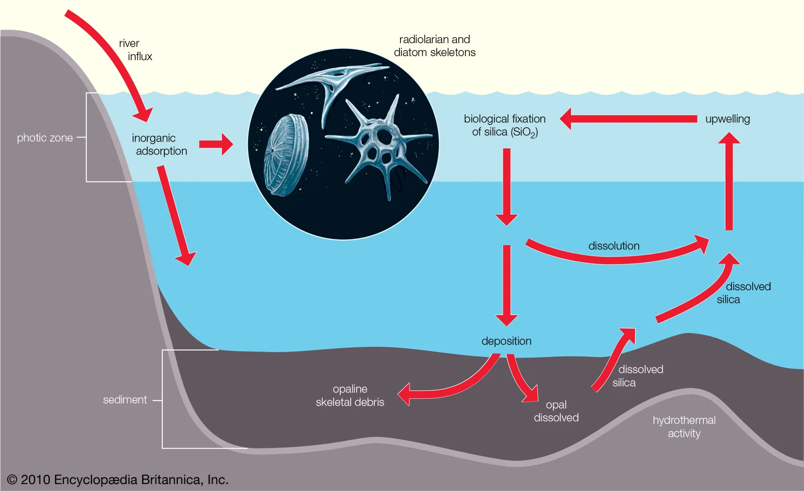
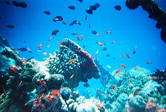

Marine Biology • Scientific Illustration • Conservation Advocacy
Descend ↓Mil is a marine biology student and ocean artist passionate about reef ecosystems, pelagic life, and marine conservation. Her work merges scientific field research with visual storytelling — translating data and ecological complexity into accessible, beautiful narratives.

Illustration exploring plankton light emission patterns.

Mixed media piece inspired by field observations.

Conceptual interpretation of pelagic silhouettes.
Conducted reef transects, assisted in specimen cataloguing, logged ecological data, and created visual summaries for public outreach.
Produced marine organism diagrams and conservation materials for educational campaigns.
Email: mil@example.com